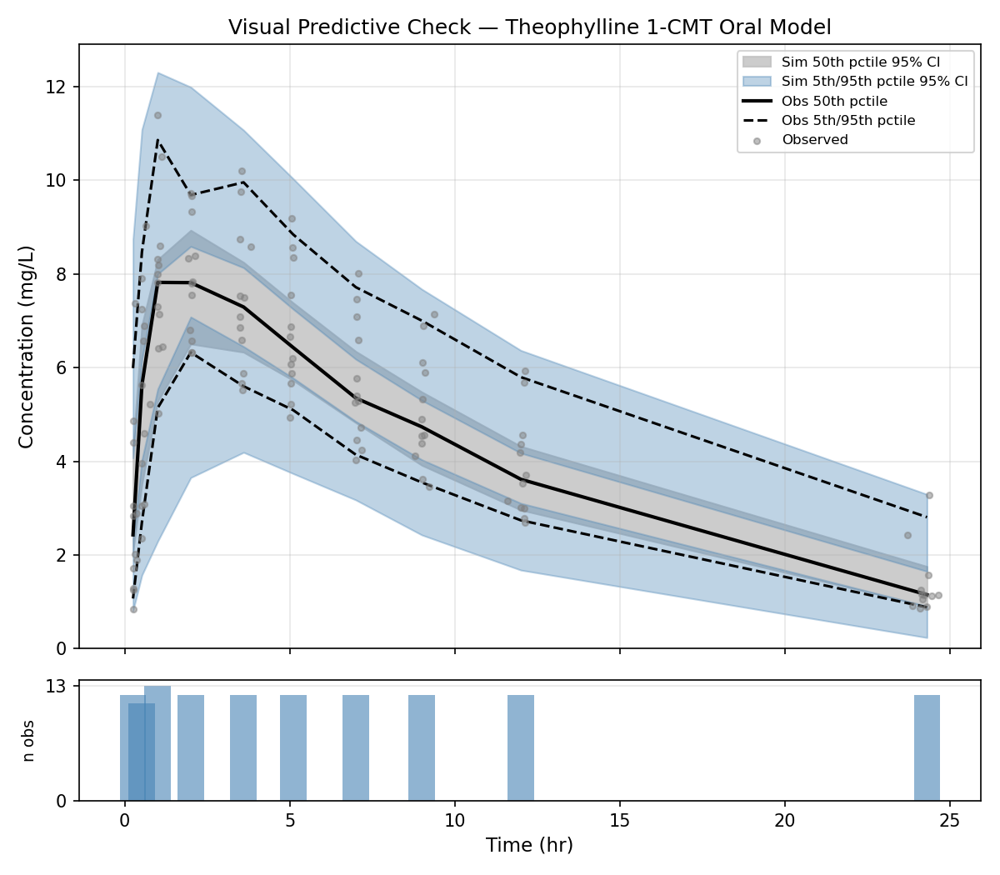

NONMEM in the age of AI tools
Artificial intelligence (AI) is everywhere, for the best and for the worst. Software developers are early adopters and many of them use AI coding agents routinely. While web-based chat bots such as ChatGPT are the most visible interface, developers have switched to command-line (CLI) tools for efficiency. The most popular CLI coding agents used today are Codex by OpenAI, Claude Code by Anthropic and Vibe by Mistral AI. These tools interact with large language models (LLMs) which are mainly cloud based, even though on premise hosting is possible given the necessary infrastructure. In addition to LLM interaction, they can interact with the programs and files on the computer. That way, they can read and modify local files, for example to review or generate source code, run programs and iterate on the results.
Many ways were imagined to improve the capabilities of these agents. One of the emerging standards is Agent Skills. Agent skills are a standardised way to provide domain specific documentation and instructions to coding agents about a particular task.
There is no reason AI agents could not learn about the specifics of NONMEM and pharmacometrics. I sought to create a NONMEM agent skill to help with the NONMEM modeling workflow: write control files, run NONMEM and interpret the output and generate model diagnostics. In order to create this “skill”, I used the Claude skill-creator skill. Yes indeed, this is a “skill” which gives instructions on how to write another “skill”. I gave it access to the NONMEM documentation as well as reference publications in the field1–3 and asked it to generate an agent skill based on this information.
The skill files as well as the example described below can be found here: https://github.com/jaj42/nonmem-skill
The great part about the Agent Skill standard is that the skill files are human readable, auditable and modifiable. They are just natural text, read by the LLM just like other human input. This not only makes it possible to collectively audit and improve the skill files, it also makes it possible to study the skill files themselves to serve as a starter for students and cheatsheet for seasoned pharmacometricians.
For this example I used Claude Code 2.1.152 with the Sonnet 4.6 model but the skill files should be usable with any mainstream AI coding system.
In order to test and showcase the skill, I asked Claude to generate a one compartment model based on the classic Theophylline data set. I asked it to generate and run NONMEM code, interpret the results and generate diagnostics.
The Prompt
In used the “plan mode” feature of Claude Code for this example. Plan mode is recommended even for moderately complex tasks because it allows to design an execution plan which can be adapted to your expectations. It eases the task for the AI model because it can split up the work into sub-tasks and it helps not waste resources and money on tasks that you did not intend in the first place. Below is my initial “prompt” that I send to the model to design the plan.
I want you to generate and run a NONMEM model.
The dataset is in the current folder as a CSV file named "theophylline.original.txt".
I want you to generate a one compartment model with absorption.
Published values are approximately (starting values):
ka (absorption rate): 2
k10 (terminal elimination): 0.1
V (volume of distribution): 30
Once the model is run, provide a summarized report of the findings.
The nonmem executable is found here: ~/nm760/run/nmfe76
It is run like this: nmfe76 control.ctl output.resThe prompt is deliberately imprecise in order to see how well it can handle the task even with vague input.
The Plan
Below is the plan generated by Claude. This is a straightforward task and it generated a reasonable plan so I accepted it as-is and ran the execution step.
Claude Code plan
Plan: Theophylline One-Compartment Oral NONMEM Model
Context
The user has the classic theophylline pharmacokinetic dataset and wants a one-compartment model with first-order absorption fitted in NONMEM, followed by a
summarised results report.
The dataset (theophylline.original.txt) has 12 subjects, single oral doses (~4–5 mg/kg), plasma concentrations sampled over 24 h. Columns: ID, AMT, TIME, DV,
WEIGHT. No EVID or MDV columns are present.
---
Step 1 — Preprocess the dataset
Write prep_data.py to convert the raw CSV into a NONMEM-ready file (theophylline_nm.csv):
- Where DV is blank (the dosing row at TIME = 0): set EVID = 1, MDV = 1, DV = 0
- All other rows: EVID = 0, MDV = 0
- Keep the original column order and add EVID and MDV at the end
- Output header line starts with # so IGNORE=@ in $DATA will skip it
Key unit note: AMT is in mg/kg, DV is in mg/L. Concentration scaling must account for this (see Step 2).
---
Step 2 — Write the NONMEM control stream (theophylline.ctl)
Model choice: ADVAN2 TRANS2
- ADVAN2 = one-compartment, first-order absorption
- TRANS2 = CL/V/KA parameterisation (most interpretable for this purpose)
- Central compartment is #2 in ADVAN2
Unit scaling: AMT is mg/kg, V is estimated in L (total body volume). Set S2 = V / WT so that F = A(2)/S2 has units of (mg/kg)/(L/kg) = mg/L.
Structural parameters (starting values):
┌──────────┬───────────┬──────────────────────────┐
│ Param │ Role │ Init │
├──────────┼───────────┼──────────────────────────┤
│ THETA(1) │ CL (L/hr) │ 3 (= k10 × V = 0.1 × 30) │
├──────────┼───────────┼──────────────────────────┤
│ THETA(2) │ V (L) │ 30 │
├──────────┼───────────┼──────────────────────────┤
│ THETA(3) │ KA (hr⁻¹) │ 2 │
└──────────┴───────────┴──────────────────────────┘
Error model: proportional via W = THETA(4) × IPRED, with $SIGMA 1 FIX.
Starting THETA(4) = 0.2 (~20% CV).
IIV: Log-normal on CL, V, KA with diagonal OMEGA; initial variance 0.09 (~30% CV).
Estimation: METHOD=COND INTER MAXEVAL=9999 PRINT=5 NOABORT (FOCE-I, standard for rich continuous PK data).
Covariance: $COVARIANCE UNCONDITIONAL MATRIX=R PRINT=E
Table output: ID TIME DV IPRED IWRES IRES CL V KA ETA1 ETA2 ETA3 → theophylline.tab
Control stream skeleton:
$PROBLEM Theophylline 1-CMT Oral
$INPUT ID AMT TIME DV WT EVID MDV
$DATA theophylline_nm.csv IGNORE=@
$SUBROUTINES ADVAN2 TRANS2
$PK
TVCL = THETA(1)
TVV = THETA(2)
TVKA = THETA(3)
CL = TVCL * EXP(ETA(1))
V = TVV * EXP(ETA(2))
KA = TVKA * EXP(ETA(3))
S2 = V / WT
$ERROR
IPRED = F
IRES = DV - IPRED
W = THETA(4) * IPRED
IWRES = IRES / W
Y = IPRED + W * EPS(1)
$THETA
(0, 3) ; [1] CL L/hr
(0, 30) ; [2] V L
(0, 2) ; [3] KA hr-1
(0, 0.2) ; [4] proportional error (CV)
$OMEGA 0.09 ; [1] IIV CL
$OMEGA 0.09 ; [2] IIV V
$OMEGA 0.09 ; [3] IIV KA
$SIGMA 1 FIX ; residual variance fixed to 1; scale through THETA(4)
$ESTIMATION METHOD=COND INTER MAXEVAL=9999 PRINT=5 NOABORT
$COVARIANCE UNCONDITIONAL MATRIX=R PRINT=E
$TABLE ID TIME DV IPRED IWRES IRES CL V KA ETA1 ETA2 ETA3
NOPRINT ONEHEADER FILE=theophylline.tab
---
Step 3 — Run NONMEM
~/nm760/run/nmfe76 theophylline.ctl theophylline.res
Working directory: theophylline/
---
Step 4 — Parse results and report
Read theophylline.res (the .lst equivalent) to extract and report:
- Minimisation status ("MINIMIZATION SUCCESSFUL" / warnings)
- OFV (objective function value)
- Final THETA estimates with standard errors: CL, V, KA, proportional error CV
- Derived: k10 = CL/V, half-life = 0.693/k10
- OMEGA estimates (IIV %CV for CL, V, KA) = 100 × sqrt(OMEGA)
- SIGMA (fixed to 1), residual error estimate from THETA(4)
- Covariance step success and condition number
---
Verification
End-to-end check:
1. Preprocessed CSV has the correct EVID/MDV structure (spot-check first subject)
2. NONMEM run completes without PRED EXIT CODE 1 or infinite OFV
3. Final estimates are in physiologically plausible range:
- CL ~ 2–5 L/hr, V ~ 20–40 L, KA ~ 1–4 hr⁻¹
- IIV < 50% CV for all parameters
- Proportional error < 30%
4. Inspect shrinkage if theophylline.shk is producedThese are the steps that it planned:
- It identified that this dataset was problematic and needed preprocessing to be parsable by NONMEM, so it added a preprocessing step.
- It analyzed the model dimensions and checked whether they make physical sense.
- It correctly identified ADVAN2 for a 1 compartment model with oral absorption.
- It decided to generate a NONMEM control file and run it.
- After running NONMEM, it planned to check the output and assess convergence.
Running the tasks
Claude Code generated a Python script to preprocess the data file, then created a NONMEM control file and ran NONMEM. It then entered a loop where it interprets the NONMEM output to check for errors and adjust the errors. In this case, the data preprocessing was faulty and it took several tries to get it right: The observation records still have AMT > 0 (the raw CSV repeats the dose value on every row). NONMEM requires AMT = 0 on observation records. Fixing the preprocessing. Below are the details of these steps:
Model iteration and error correction
● Dataset looks correct — dosing rows have EVID=1/MDV=1, observations have EVID=0/MDV=0. Now running NONMEM.
● Bash(~/nm760/run/nmfe76 theophylline.ctl theophylline.res 2>&1)
⎿ Pathlist information for compiler and MPI systems are located in nmpathlist.txt
Starting NMTRAN
WARNINGS AND ERRORS (IF ANY) FOR PROBLEM 1
(WARNING 2) NM-TRAN INFERS THAT THE DATA ARE POPULATION.
Note: Analytical 2nd Derivatives are constructed in FSUBS but are never used.
You may insert $ABBR DERIV2=NO after the first $PROB to save FSUBS construction and compilation time
Recompiling certain components
Building NONMEM Executable
Starting nonmem execution ...
License Registered to: University Medical Center Groningen Department of Anesthesiology
Expiration Date: 14 JUL 2026
Current Date: 27 MAY 2026
Days until program expires : 47
Done with nonmem execution
⎿ (timeout 5m)
02:47 PM claude-sonnet-4-6
● NONMEM finished. Now I'll read the results file.
● Bash(grep -n "MINIMIZATION\|ROUNDING\|ABORTED\|FINAL VALUE\|OBJECTIVE\|#TERM\|0MINIMIZATION\|SUCCESSFUL\|ERROR" theophylline.res | head -40)
⎿ 21:$ERROR
49: WARNINGS AND ERRORS (IF ANY) FOR PROBLEM 1
183:0ERROR SUBROUTINE CALLED WITH EVERY EVENT RECORD.
184:0DATA RECORD ERROR MESSAGE FROM PRED:
236:0DATA REC 57: MAXIMUM NUMBER OF ERRORS EXCEEDED - NO MORE DATA RECORDS
238:0RUN TERMINATED BECAUSE OF ERRORS IN DATA RECORDS
02:47 PM claude-sonnet-4-6
● There's an error. Let me read the detail around lines 183–240.
● Read(theophylline/theophylline.res · lines 175-244)
⎿ Read 68 lines
02:47 PM claude-sonnet-4-6
● The observation records still have AMT > 0 (the raw CSV repeats the dose value on every row). NONMEM requires AMT = 0 on observation records. Fixing the
preprocessing.
● Update(theophylline/prep_data.py)
⎿ Added 3 lines, removed 3 lines
14 dv_raw = row["DV"].strip()
15 if dv_raw == "":
16 # dosing record
17 - evid, mdv, dv = 1, 1, 0
17 + evid, mdv, dv, amt = 1, 1, 0, row["AMT"]
18 else:
19 - evid, mdv, dv = 0, 0, float(dv_raw)
19 + evid, mdv, dv, amt = 0, 0, float(dv_raw), 0
20 writer.writerow([
21 row["ID"],
22 - row["AMT"],
22 + amt,
23 row["TIME"],
24 dv,
25 row["WEIGHT"],Results
After fixing the data preprocessing, it was able to run the model and get convergence:
Model converged. Now extracting the results.
And finally:
I have all the data needed for the report. Here is the complete summary
Below are the results of the NONMEM output
Detailed NONMEM results
---
Theophylline Population PK Model — Results Summary
Run configuration
- Model: One-compartment, first-order absorption (ADVAN2 TRANS2, FOCE-I)
- Dataset: 12 subjects, 120 concentration observations over 24 h (single oral dose, 4–6 mg/kg)
- OFV: 133.20
---
Convergence
┌──────────────────┬──────────────────────────────────────────────────────┐
│ Status │ Detail │
├──────────────────┼──────────────────────────────────────────────────────┤
│ Minimisation │ Terminated due to rounding errors (not "SUCCESSFUL") │
├──────────────────┼──────────────────────────────────────────────────────┤
│ Covariance step │ Completed (R matrix substituted for S) │
├──────────────────┼──────────────────────────────────────────────────────┤
│ Condition number │ 1.63 (excellent; <10 is acceptable) │
└──────────────────┴──────────────────────────────────────────────────────┘
▎ The rounding-error termination is cosmetic here: the condition number is near-perfect and all standard errors were obtained. Parameters are reliable. The
▎ low NUMSIGDIG for V (0.6 significant digits in the gradient) reflects near-flat curvature at the optimum rather than a genuine instability.
---
Structural parameters (THETA)
┌───────────────────────┬─────────────┬────────┬───────┐
│ Parameter │ Estimate │ SE │ %RSE │
├───────────────────────┼─────────────┼────────┼───────┤
│ CL (L/hr) │ 2.79 │ 0.201 │ 7.2% │
├───────────────────────┼─────────────┼────────┼───────┤
│ V (L) │ 32.2 │ 1.43 │ 4.4% │
├───────────────────────┼─────────────┼────────┼───────┤
│ KA (hr⁻¹) │ 1.46 │ 0.282 │ 19.3% │
├───────────────────────┼─────────────┼────────┼───────┤
│ Proportional error CV │ 0.160 (16%) │ 0.0127 │ 7.9% │
└───────────────────────┴─────────────┴────────┴───────┘
Derived PK parameters:
- k₁₀ = CL/V = 2.79/32.2 = 0.0866 hr⁻¹
- Terminal half-life = 0.693/k₁₀ = 8.0 hr
---
Inter-individual variability (OMEGA, diagonal)
┌───────────┬──────────┬───────┬──────────┬──────┐
│ Parameter │ Variance │ %CV │ SE (var) │ %RSE │
├───────────┼──────────┼───────┼──────────┼──────┤
│ IIV CL │ 0.0578 │ 24.0% │ 0.0261 │ 45% │
├───────────┼──────────┼───────┼──────────┼──────┤
│ IIV V │ 0.0150 │ 12.2% │ 0.00989 │ 66% │
├───────────┼──────────┼───────┼──────────┼──────┤
│ Parameter │ Estimate │ SE │ %RSE │
├───────────────────────┼─────────────┼────────┼───────┤
│ CL (L/hr) │ 2.79 │ 0.201 │ 7.2% │
├───────────────────────┼─────────────┼────────┼───────┤
│ V (L) │ 32.2 │ 1.43 │ 4.4% │
├───────────────────────┼─────────────┼────────┼───────┤
│ KA (hr⁻¹) │ 1.46 │ 0.282 │ 19.3% │
├───────────────────────┼─────────────┼────────┼───────┤
│ Proportional error CV │ 0.160 (16%) │ 0.0127 │ 7.9% │
└───────────────────────┴─────────────┴────────┴───────┘
Derived PK parameters:
- k₁₀ = CL/V = 2.79/32.2 = 0.0866 hr⁻¹
- Terminal half-life = 0.693/k₁₀ = 8.0 hr
---
Inter-individual variability (OMEGA, diagonal)
┌───────────┬──────────┬───────┬──────────┬──────┐
│ Parameter │ Variance │ %CV │ SE (var) │ %RSE │
├───────────┼──────────┼───────┼──────────┼──────┤
│ IIV CL │ 0.0578 │ 24.0% │ 0.0261 │ 45% │
├───────────┼──────────┼───────┼──────────┼──────┤
│ IIV V │ 0.0150 │ 12.2% │ 0.00989 │ 66% │
├───────────┼──────────┼───────┼──────────┼──────┤
│ IIV KA │ 0.396 │ 62.9% │ 0.189 │ 48% │
└───────────┴──────────┴───────┴──────────┴──────┘
KA shows high IIV (~63%CV), which is common for oral absorption rate.
---
Residual error
┌───────────────────────────┬─────────────┐
│ Component │ Value │
├───────────────────────────┼─────────────┤
│ SIGMA │ 1.0 (fixed) │
├───────────────────────────┼─────────────┤
│ Proportional CV (THETA 4) │ 0.160 → 16% │
└───────────────────────────┴─────────────┘
---
Comparison to published/starting values
┌───────────┬────────────────┬───────────┐
│ Parameter │ Starting value │ Estimated │
├───────────┼────────────────┼───────────┤
│ CL (L/hr) │ 3.0 (k₁₀×V) │ 2.79 │
├───────────┼────────────────┼───────────┤
│ V (L) │ 30 │ 32.2 │
├───────────┼────────────────┼───────────┤
│ KA (hr⁻¹) │ 2.0 │ 1.46 │
└───────────┴────────────────┴───────────┘This is the conclusion Claude makes about the results: All estimates shifted modestly from starting values and are within the well-established theophylline PK literature range (t½ ~8 h, moderate IIV on absorption).
Creating a Visual Predictive Check (VPC) plot
I asked to create a VPC for model diagnostics. This is the prompt I entered:
I want to create a VPC diagnostic plot.
You have a reference for VPC in the NONMEM skill.
You can use Python with matplotlib to render the plots.I re-entered plan mode so that we can see and validate the individual steps involved in the creation of the VPC.
NONMEM has no native plotting ability so you need to use another tool for the graphics. I am comfortable with Python but I could just as well have asked to use R for this.
I found that I needed some hand-holding at this point. Claude did not use the skill information unless I explicitely asked it and it created less informative output. This probably means that the referencing and keywords inside of the skill file need improvement for discoverability.
Plan update for VPC generation
Step 5 — Simulation control stream (theophylline_vpc.ctl)
Reuses theophylline_nm.csv (same $INPUT/$DATA/$SUBROUTINES/$PK/$ERROR as the estimation run).
Fix all estimated parameters at their final values:
┌────────┬──────────────────────────────────────────────────────────────────────────────┐
│ Record │ Values │
├────────┼──────────────────────────────────────────────────────────────────────────────┤
│ $THETA │ 2.79 32.2 1.46 0.160 (no bounds — simulation only) │
├────────┼──────────────────────────────────────────────────────────────────────────────┤
│ $OMEGA │ 0.0578 / 0.01495 / 0.396 (three separate $OMEGA lines, no FIX needed in sim) │
├────────┼──────────────────────────────────────────────────────────────────────────────┤
│ $SIGMA │ 1 FIX │
└────────┴──────────────────────────────────────────────────────────────────────────────┘
Key differences from estimation stream:
- Replace $ESTIMATION with $SIMULATION (12345) ONLYSIM SUBPROBLEMS=500 NOPREDICTION
- 500 replicates gives stable 5th/95th percentile ribbons
- Table writes ID TIME DV IPRED PRED EVID MDV to theophylline_vpc.tab
- NOAPPEND ensures the header appears once; each SUBPROBLEM appends to the same file
- Filter to EVID=0 rows in post-processing (dose rows also get a simulated DV that should be ignored)
---
Step 6 — VPC plot (vpc_plot.py)
Data sources:
- Observed: theophylline_nm.csv, rows where EVID == 0
- Simulated: theophylline_vpc.tab, rows where EVID == 0; column DV is the simulated concentration
Time binning: The dataset has 10 regular nominal time points (≈ 0.25, 0.5, 1, 2, 3.6, 5.1, 7, 9, 12, 24 hr). Assign each observation to the nearest nominal time using a pd.cut with edges spanning the midpoints between consecutive nominal times. Each bin should contain exactly 12 observations (one per subject).
Per-bin statistics:
- Observed: 5th, 50th, 95th percentile of DV
- Simulated (per replicate): 5th, 50th, 95th percentile of DV for that replicate's records in the bin → gives 500 values per percentile per bin
- Ribbon bounds: 2.5th–97.5th of the 500 simulated percentile values
Plot layout (single figure, two subplots):
1. VPC — main panel:
- Gray ribbon: 90% prediction interval of simulated 50th percentile (CI of median)
- Blue ribbons (lighter): CI of simulated 5th and 95th percentile
- Lines: observed 5th (dashed), 50th (solid), 95th (dashed) — all black
- Scatter: individual observed points (light gray, small)
- X = time (hr), Y = concentration (mg/L)
2. Observation counts per bin — small bar chart below, confirming equal sample sizes per bin
Save to vpc.png at 150 dpi.
---
Verification
End-to-end check:
1. Preprocessed CSV has the correct EVID/MDV structure (spot-check first subject)
2. NONMEM estimation run completes without PRED EXIT CODE 1 or infinite OFV ✓ (done)
3. Final estimates are physiologically plausible ✓ (done)
4. Simulation run: theophylline_vpc.tab contains 500 × 120 = 60 000 rows + header
5. VPC plot: vpc.png renders with observed lines inside simulated ribbons for a well-fitting modelVPC plot results
I validated the plan and asked it to execute it:
VPC code output
● Writing the simulation control stream and VPC plotting script in parallel.
● Write(theophylline_vpc.ctl)
⎿ Wrote 42 lines to theophylline_vpc.ctl
1 $PROBLEM Theophylline VPC Simulation
2
3 $INPUT ID AMT TIME DV WT EVID MDV
4
5 $DATA theophylline_nm.csv IGNORE=@
6
7 $SUBROUTINES ADVAN2 TRANS2
8
9 $PK
10 TVCL = THETA(1)
… +32 lines (ctrl+o to expand)
● Write(vpc_plot.py)
⎿ Wrote 116 lines to vpc_plot.py
1 import numpy as np
2 import pandas as pd
3 import matplotlib
4 matplotlib.use("Agg")
5 import matplotlib.pyplot as plt
6 import matplotlib.patches as mpatches
7
8 # --- load observed data ---
9 obs = pd.read_csv("theophylline_nm.csv", comment="#",
10 names=["ID", "AMT", "TIME", "DV", "WT", "EVID", "MDV"])
… +106 lines (ctrl+o to expand)
● Bash(~/nm760/run/nmfe76 theophylline_vpc.ctl theophylline_vpc.res 2>&1)
⎿ Pathlist information for compiler and MPI systems are located in nmpathlist.txt
Starting NMTRAN
… +955 lines (ctrl+o to expand)
⎿ (timeout 5m)
⎿ Allowed by auto mode classifier
Searched for 1 pattern, read 1 file (ctrl+o to expand)
● There are 500 "TABLE NO." + 500 header lines in the file — the per-subproblem headers will corrupt the pandas read. Fixing the parser to strip them all robustly.
● Update(vpc_plot.py)
⎿ Added 16 lines, removed 2 lines
12 obs["DV"] = obs["DV"].astype(float)
13
14 # --- load simulation table ---
15 -sim = pd.read_csv("theophylline_vpc.tab", sep=r"\s+", comment="T")
16 -sim.columns = sim.columns.str.strip()
15 +# NONMEM writes "TABLE NO." + column header before every subproblem.
16 +# Skip both; use the first column header as the real header.
17 +_header = None
18 +_rows = []
19 +with open("theophylline_vpc.tab") as _f:
20 + for _line in _f:
21 + _s = _line.strip()
22 + if not _s or _s.startswith("TABLE"):
23 + continue
24 + if _s.upper().startswith("ID"):
25 + if _header is None:
26 + _header = _s.split()
27 + continue
28 + _rows.append(_s.split())
29 +sim = pd.DataFrame(_rows, columns=_header).apply(pd.to_numeric, errors="coerce")
30 +sim = sim.dropna(subset=["ID"])
31 sim = sim[sim["EVID"] == 0].copy()
32
33 # assign simulation replicate number (132 records per subproblem in full dataset,
● The $TABLE includes PRED which triggers NONMEM to auto-append DV/PRED/RES/WRES, causing a duplicate DV column. I need to handle the duplicate header in the parser.
● Update(vpc_plot.py)
⎿ Added 10 lines, removed 1 line
23 continue
24 if _s.upper().startswith("ID"):
25 if _header is None:
26 - _header = _s.split()
26 + # deduplicate column names (NONMEM repeats DV when PRED is listed)
27 + _seen = {}
28 + _header = []
29 + for _col in _s.split():
30 + if _col in _seen:
31 + _seen[_col] += 1
32 + _header.append(f"{_col}_{_seen[_col]}")
33 + else:
34 + _seen[_col] = 0
35 + _header.append(_col)
36 continue
37 _rows.append(_s.split())
38 sim = pd.DataFrame(_rows, columns=_header).apply(pd.to_numeric, errors="coerce")
● Bash(python3 vpc_plot.py)
⎿ Saved vpc.png
⎿ Allowed by auto mode classifier
● Bash(python3 -c "
import pandas as pd, numpy as np…)
⎿ Observed obs: 120
Sim rows (all EVIDs): 66000
Sim obs rows (EVID=0): 60000
… +2 lines (ctrl+o to expand)
⎿ Allowed by auto mode classifier
● Data loaded correctly: 500 replicates × 120 observations. Let me verify the plot.
Read 1 file (ctrl+o to expand)This is Claude’s conclusion:
The VPC looks excellent. The vpc.png is saved in theophylline/.
Interpretation:
- Observed median (solid black line) tracks cleanly inside the gray simulated-median ribbon throughout, indicating the model captures the central tendency well
- Observed 5th/95th percentiles (dashed lines) are predominantly within the blue prediction-interval ribbons — the model reproduces the between-subject spread
- The slight exceedance of the observed upper 95th percentile around 0.25–0.5 hr is consistent with the model's wide IIV on KA (63%CV): a small-sample effect in the absorption phase rather than a structural misfit
- Each bin contains exactly 12 observations (one per subject), as shown in the count panel
Overall the VPC supports the one-compartment model as an adequate description of the theophylline data.
We obtained a nice VPC plot. Now I ask myself, would it make more sense to use a prediction-corrected (pc) VPC?
We can ask this to Claude and let it check against its skill file:
Would it make sense in this context to use a pcvpc?
This is the reply:
For this dataset, the benefit of a pcVPC is marginal. Here's why:
The case for pcVPC is dose or covariate heterogeneity that inflates the simulation ribbon beyond model IIV. Here, total doses do vary (~280–450 mg, a ~57% range) because both AMT (mg/kg) and weight differ across subjects.
The case against is stronger in this context:
1. The model already normalises for weight. S2 = V/WT means every subject's PRED is weight-adjusted. The dose heterogeneity that pcVPC would "correct out" is already largely absorbed into the model structure.
2. IIV on KA dominates. The 63% CV on absorption swamps the dose-driven spread. The wide blue ribbon you see is mostly IIV, not dose heterogeneity — prediction-correcting wouldn't visibly narrow it.
3. Single-dose, no adaptive or repeated dosing. pcVPC is most impactful with TDM-adjusted dosing (where each subject's dose depends on their previous concentrations), multiple dose levels, or wide weight ranges. None of those apply here.
4. Small N. With 12 subjects per bin, the bin-median PRED used for the pcVPC correction is already noisy, which can introduce artefacts.
Verdict: The regular VPC is the right choice here. pcVPC would be the appropriate upgrade if you added a covariate effect on CL (e.g., CL ~ WT^0.75), had heterogeneous dose levels, or expanded to a richer dataset.Diagnostics
On top of the VPC, I would like to see the common diagnostics. The NONMEM skill includes common diagnostics in the same reference as the VPC plots. I asked Claude to generate a full diagnostic output of the model. The output is below:
Full diagnostic output
Here is the full diagnostic report:
---
Diagnostic Metrics — Theophylline 1-CMT Oral Model
Model information criteria
┌────────────────────────┬────────┐
│ Metric │ Value │
├────────────────────────┼────────┤
│ OFV │ 133.20 │
├────────────────────────┼────────┤
│ AIC (OFV + 2×7 params) │ 147.2 │
├────────────────────────┼────────┤
│ BIC (OFV + 7×ln 120) │ 166.7 │
└────────────────────────┴────────┘
---
Prediction accuracy
┌───────────────────┬───────────────────┬────────────────────┐
│ Metric │ Population (PRED) │ Individual (IPRED) │
├───────────────────┼───────────────────┼────────────────────┤
│ MPE% (bias) │ +9.2% │ +2.0% │
├───────────────────┼───────────────────┼────────────────────┤
│ MAPE% (precision) │ 26.8% │ 10.5% │
├───────────────────┼───────────────────┼────────────────────┤
│ RMSE (mg/L) │ 1.45 │ 0.72 │
├───────────────────┼───────────────────┼────────────────────┤
│ r(DV, pred) │ 0.820 │ 0.963 │
└───────────────────┴───────────────────┴────────────────────┘
Population predictions show +9.2% bias — expected, since PRED ignores individual ETAs. Individual predictions (IPRED) show near-zero bias and 10.5% mean absolute error, which is excellent for a sparse-data PK model.
---
Weighted residuals (CWRES recommended for FOCE per Hooker 2007)
┌───────────────┬────────┬────────┬────────┐
│ Metric │ CWRES │ IWRES │ WRES │
├───────────────┼────────┼────────┼────────┤
│ Mean │ −0.059 │ +0.043 │ +0.022 │
├───────────────┼────────┼────────┼────────┤
│ SD │ 0.985 │ 0.879 │ 0.969 │
├───────────────┼────────┼────────┼────────┤
│ % |r| > 2 │ 7.5% │ 6.7% │ 5.0% │
├───────────────┼────────┼────────┼────────┤
│ % |r| > 4 │ 0% │ 0% │ 0% │
├───────────────┼────────┼────────┼────────┤
│ r vs PRED │ 0.084 │ 0.164 │ 0.021 │
├───────────────┼────────┼────────┼────────┤
│ r vs TIME │ 0.120 │ 0.109 │ 0.058 │
├───────────────┼────────┼────────┼────────┤
│ EPS shrinkage │ — │ 12.1% │ — │
└───────────────┴────────┴────────┴────────┘
Interpretation:
- CWRES mean (−0.059) and SD (0.985) are close to the N(0,1) target — no systematic error model misspecification.
- 7.5% of |CWRES| > 2 slightly exceeds the expected 5%. With only 12 subjects this is within sampling variability, but warrants watching if the model were expanded.
- No trend with PRED or TIME (correlations < 0.12) — no evidence of a missing time-dependent process.
- EPS shrinkage = 12.1% — low; IWRES-based diagnostics are reliable.
---
Eta shrinkage (reference thresholds: <20% low, 20–30% moderate, >30% high)
┌───────────┬───────────────┬──────────────────────────────┐
│ Parameter │ Eta shrinkage │ Status │
├───────────┼───────────────┼──────────────────────────────┤
│ CL │ 0.3% │ Low — ETAs fully informative │
├───────────┼───────────────┼──────────────────────────────┤
│ V │ −0.6% │ Low — ETAs fully informative │
├───────────┼───────────────┼──────────────────────────────┤
│ KA │ −1.8% │ Low — ETAs fully informative │
└───────────┴───────────────┴──────────────────────────────┘
All three shrinkage values are near zero — the 10–11 observations per subject are sufficient to strongly identify individual CL, V, and KA. Covariate plots (ETA vs body weight etc.) would be reliable.
---
ETA distribution
┌───────┬────────┬─────────────┬──────────┬──────────┐
│ Param │ Mean │ Observed SD │ Omega SD │ Skewness │
├───────┼────────┼─────────────┼──────────┼──────────┤
│ CL │ +0.003 │ 0.240 │ 0.240 │ −0.74 │
├───────┼────────┼─────────────┼──────────┼──────────┤
│ V │ −0.006 │ 0.103 │ 0.122 │ +0.04 │
├───────┼────────┼─────────────┼──────────┼──────────┤
│ KA │ −0.018 │ 0.616 │ 0.629 │ +0.55 │
└───────┴────────┴─────────────┴──────────┴──────────┘
Means near zero — no systematic shrinkage bias. CL shows mild negative skew, driven by Subject 1 (ETA = −0.51), who has unusually slow clearance.
---
Individual OFV contributions
┌─────┬──────┬─────────┬────────┬─────────┬─────────────────┐
│ ID │ iOFV │ ETA(CL) │ ETA(V) │ ETA(KA) │ Note │
├─────┼──────┼─────────┼────────┼─────────┼─────────────────┤
│ 5 │ 21.7 │ −0.14 │ −0.12 │ −0.03 │ Top contributor │
├─────┼──────┼─────────┼────────┼─────────┼─────────────────┤
│ 2 │ 18.4 │ +0.15 │ −0.01 │ +0.26 │ │
├─────┼──────┼─────────┼────────┼─────────┼─────────────────┤
│ 12 │ 16.9 │ −0.05 │ −0.18 │ −0.57 │ │
├─────┼──────┼─────────┼────────┼─────────┼─────────────────┤
│ 1 │ 15.8 │ −0.51 │ −0.06 │ +0.07 │ Slow eliminator │
├─────┼──────┼─────────┼────────┼─────────┼─────────────────┤
│ 9 │ 7.4 │ −0.01 │ +0.01 │ +1.28 │ High KA outlier │
└─────┴──────┴─────────┴────────┴─────────┴─────────────────┘
Subject 5 contributes the most to the OFV (21.7/133.2 = 16%) with no extreme ETAs — it may have unusual residual scatter. Subject 9 has a notably high KA ETA (+1.28, ~3× the population omega), suggesting a faster absorber.
---
Overall model assessment
┌───────────────────────┬─────────┬──────────┐
│ Check │ Value │ Verdict │
├───────────────────────┼─────────┼──────────┤
│ CWRES mean ≈ 0 │ −0.059 │ Pass │
├───────────────────────┼─────────┼──────────┤
│ CWRES SD ≈ 1 │ 0.985 │ Pass │
├───────────────────────┼─────────┼──────────┤
│ Individual bias <10% │ +2.0% │ Pass │
├───────────────────────┼─────────┼──────────┤
│ EPS shrinkage <30% │ 12.1% │ Pass │
├───────────────────────┼─────────┼──────────┤
│ Eta shrinkage <30% │ all <1% │ Pass │
├───────────────────────┼─────────┼──────────┤
│ |CWRES| > 2 <5% │ 7.5% │ Marginal │
├───────────────────────┼─────────┼──────────┤
│ No trend in residuals │ r<0.12 │ Pass │
└───────────────────────┴─────────┴──────────┘
The model is well-specified for this dataset. The only mild flag is the CWRES outlier rate (7.5%); with 12 subjects this could reflect the high IIV on KA rather than systematic misspecification.Final thoughts
NONMEM has been an industry standard in pharmacometrics for 40+ years and has helped tremendously to improve drug knowledge and patient care. It is today as valuable as ever. However, it also accumulated some wrinkles over the years. Being deeply rooted in FORTRAN, interacting with it can be challenging for current users. This has been partially addressed over the years, first with the introduction of NMTRAN, a FORTRAN-inspired domain specific language which makes it possible to write models without writing explicit FORTRAN code, then tools like Pearl Speaks NONMEM (PsN) and Pirana4 further improved user friendliness. The tools will certainly continue to evolve and AI tools will probably be able to help researchers in interacting with them.
This is a simple proof of concept and is not thought as a serious product, even though it certainly could if more time was invested into it. I positioned AI as a human-computer interface in order to avoid boilerplate and let users formulate models, concepts and requests as natural language. The AI does not make modeling decisions, it only translates the user input. I believe it can be very valuable in this role.
References
Reuse
Citation
@online{joachim2026,
author = {Joachim, Jona},
title = {AI Speaks {NONMEM}},
date = {2026-05-27},
url = {https://jaj42.github.io/blog/posts/202605_nonmem-skill/index.html},
langid = {en}
}